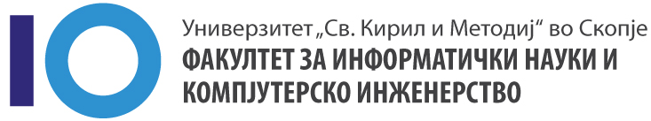

Љиљана Младеновиќ
Години: 20
Место на живеење: Скопје, Македонија
Статус: Студент
-
Средно образование
СУГС Никола КаревЗавршено средно гимназиско образование насока ПМА со успех 5,00. Учебна година 2018/2022. Посетување на натпревари по Физика, освоено 3то место на регионален натпревар по истиот. Учество на Еразмус. -
Високо образование
Факултет за Информатички Науки и Компјутерско ИнженерствоТековен студент насока СИИС- Системско инхенерство и информациски системи. Година на започнување на студии 2022. Просек за прва година 7,8.